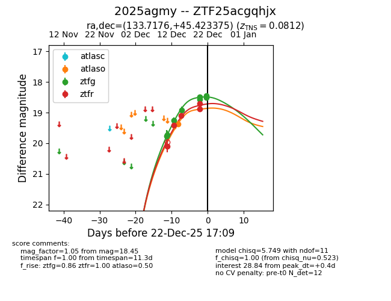
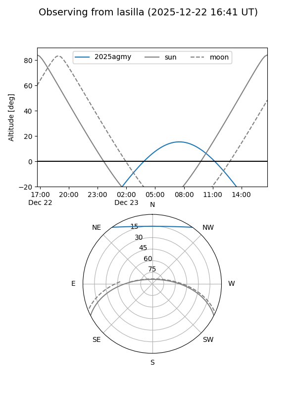
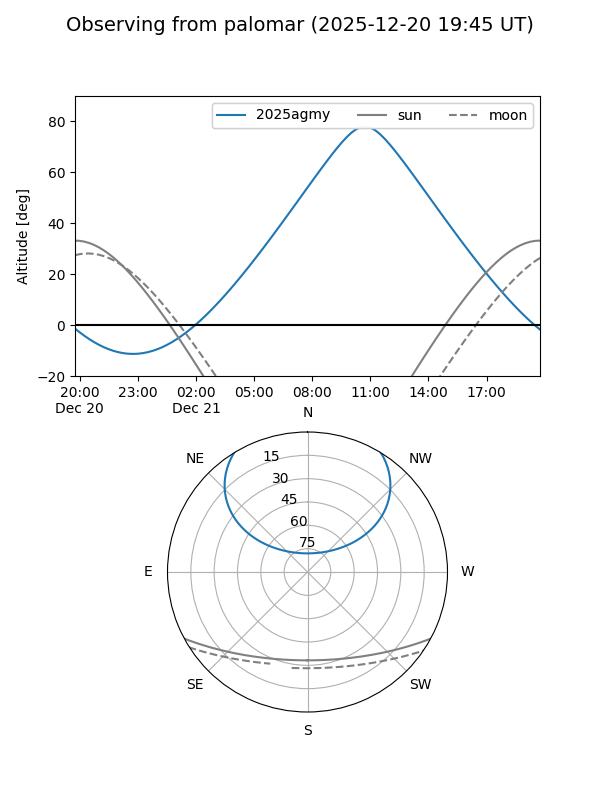
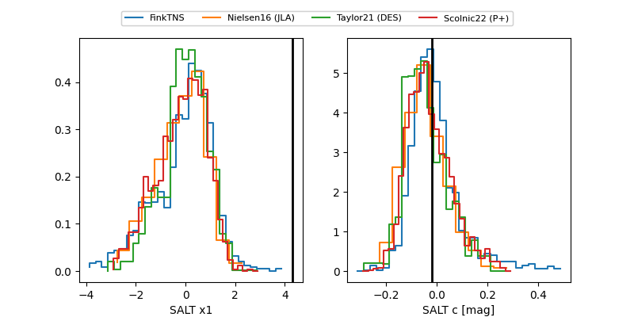

2025agmy
Target 2025agmy at 2025-12-21 11:17
Aliases and brokers:
FINK: fink-portal.org/ZTF25acgqhjx
Lasair: lasair-ztf.lsst.ac.uk/objects/ZTF25acgqhjx
ALeRCE: alerce.online/object/ZTF25acgqhjx
TNS: wis-tns.org/object/2025agmy
YSE: ziggy.ucolick.org/yse/transient_detail/2025agmy
alt names
ZTF25acgqhjx (ztf,fink_ztf)
2025agmy (tns,yse)
Coordinates:
equatorial (ra, dec) = 133.7176,+45.42338
equatorial (HMS+DMS) = 08:54:52.23,+45:25:24.15
galactic (l, b) = (174.9870,+40.18027)
Flags:
confirmed ia
Photometry:
last atlaso=19.36, ztfg=18.58, ztfr=18.71
1 atlaso, 6 ztfg, 5 ztfr detections
Lightcurve

Visibility


Additional plots
